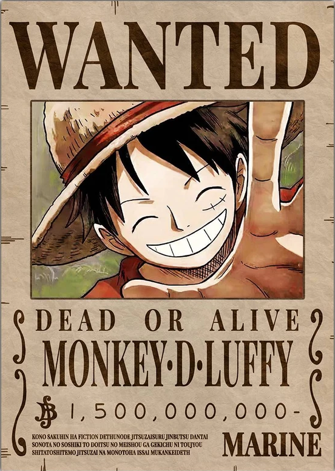
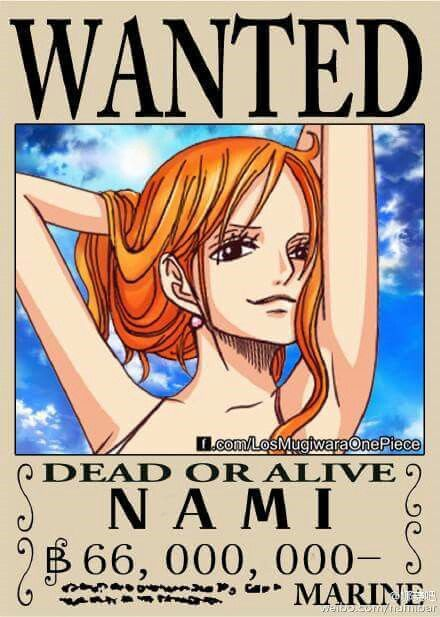
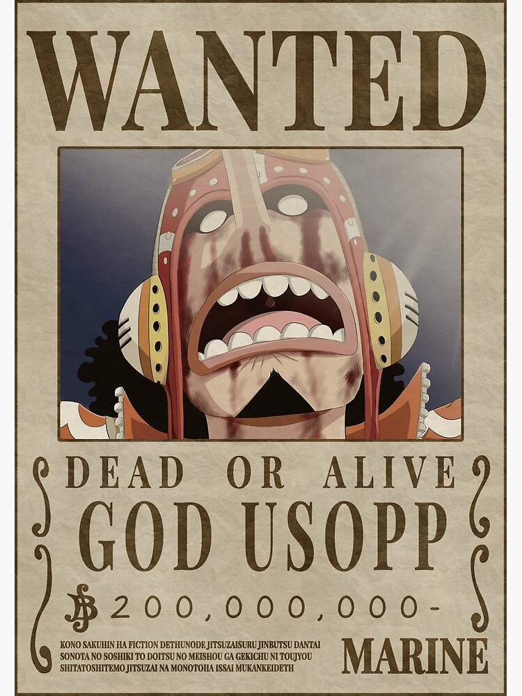
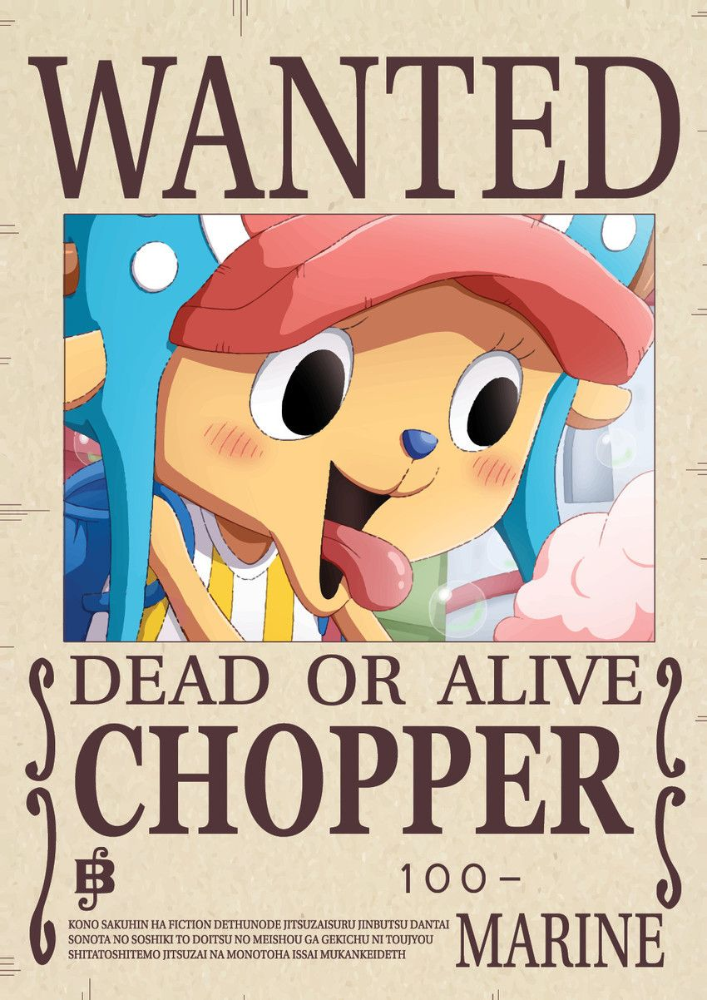
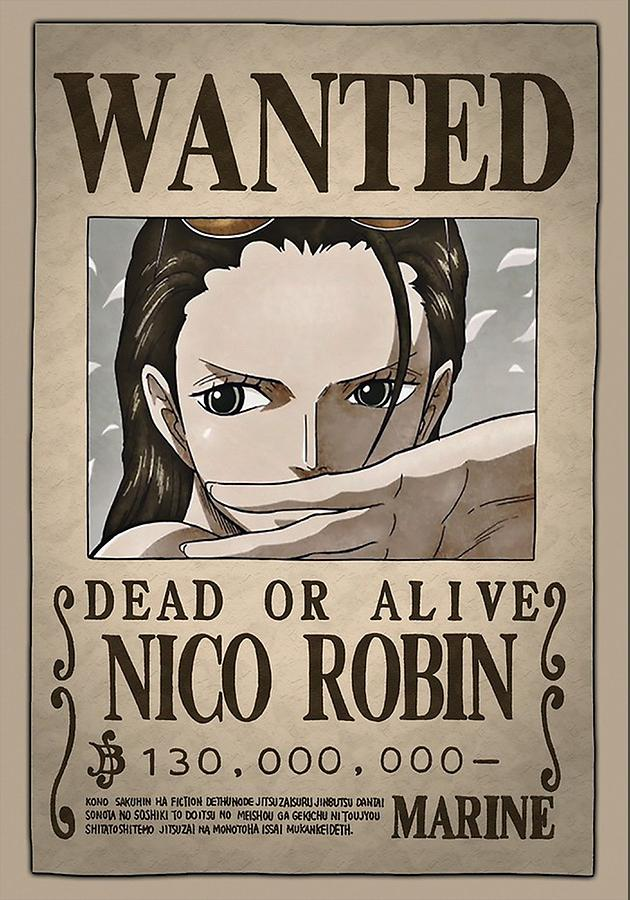
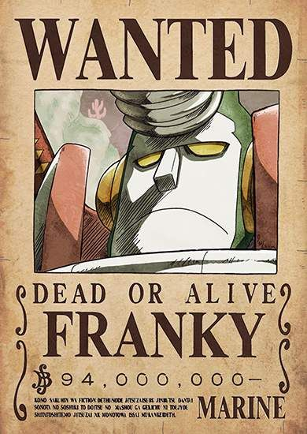
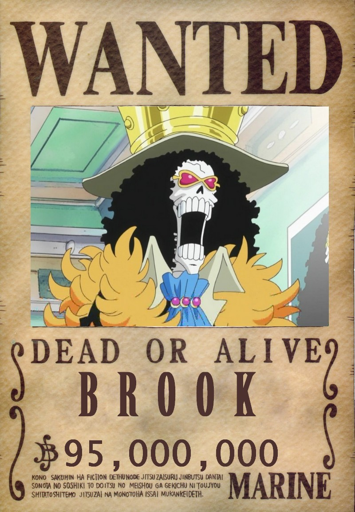
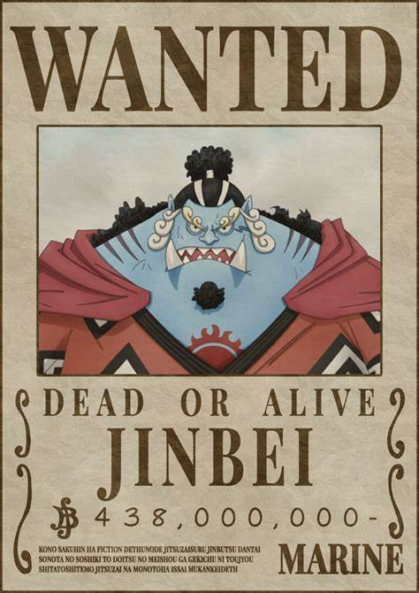

Monkey D. Luffy
Monkey D. Luffy (モンキーディールフィー Monkī Dī Rufi?, também conhecido como Luffy do Chapéu de Palha), é um personagem fictício e o protagonista da franquia One Piece criada por Eiichiro Oda. Ele é apresentado como um jovem cujo corpo ganha as propriedades de borracha após ter comido a Gomu-Gomu no Mi,uma das várias frutas amaldiçoadas conhecidas como Akuma no Mi ou Frutas do Diabo. Em busca de seu sonho de ser o Rei dos Piratas, Luffy navega pelo mundo procurando o lendário tesouro One Piece que foi deixado por Gol D. Roger, o antigo Rei dos Piratas. Alegre e aventureiro, Luffy cria seu próprio bando chamado os Piratas do Chapéu de Palha e eles são constantemente antagonizados pela marinha do Governo Mundial. Em batalha, Luffy usa a elasticidade de seu corpo para se esticar e lutar.
Roronoa Zoro
Roronoa Zoro (ロロノア・ゾロ Roronoa Zoro?, também conhecido como Zoro o Caçador de Piratas), é um personagem fictício da série One Piece criada por Eiichiro Oda. Na história, Zoro era um caçador de piratas que por fim se torna um quando é convencido pelo protagonista Monkey D. Luffy a ser o primeiro membro de sua tripulação, os Piratas do Chapéu de Palha. Dentro do grupo, Zoro tem a função de combatente e muitas vezes assume o papel de imediato do bando. Sua maior característica é lutar usando três katanas em um estilo de esgrima que ele mesmo inventou, o santoryu (三刀流 Santōryū?). Enquanto Luffy almeja ser o Rei dos Piratas, Zoro busca se tornar o maior espadachim do mundo e para isso precisa derrotar o atual detentor do título, Dracule Mihawk.

Vinsmoke Sanji
Vinsmoke Sanji (ヴィンスモーク・サンジ Vinsumōku Sanji?, também conhecido como Sanji Perna Preta) é um personagem criado por Eiichiro Oda para o seu mangá e anime One Piece. Ele é introduzido ainda na primeira saga da história como um cozinheiro do restaurante-navio Baratie e depois passa a trabalhar para o capitão Monkey D. Luffy no seu bando dos Piratas do Chapéu de Palha. Sanji é caracterizado por ser elegante e mulherengo, mas também um grande lutador que utiliza somente seus pés e pernas para nunca comprometer suas mãos e assim afetar sua carreira como chef de cozinha. Com um passado inicialmente misterioso, é revelado mais tarde que Sanji é um príncipe do Reino Germa que deserdou sua família e abandonou seu sobrenome Vinsmoke após anos de abusos.

Nami
Nami (ナミ Nami?, também conhecida como Nami a Gatuna), é uma personagem fictícia do mangá e anime One Piece criada por Eiichiro Oda. Nami é introduzida na narrativa como uma aliada oportunista do protagonista Monkey D. Luffy mas que possui motivos nobres por trás de suas ações ambíguas. Após Luffy ajudá-la a resolver seus assuntos pessoais derrotando o tritão Arlong, Nami entra oficialmente para sua tripulação dos Piratas do Chapéu de Palha onde atua como navegadora graças a seu conhecimento meteorológico. Nami possui um sonho, assim como seus companheiros, e almeja cartografar o primeiro mapa-múndi. Quando necessário ela luta usando seu bastão Bō que é capaz de controlar o clima.
Usoop
Usopp (ウソップ Usoppu?, também conhecido como God Usopp) é um personagem fictício da série em mangá One Piece criada por Eiichiro Oda. Ele faz parte do grupo principal, os Piratas do Chapéu de Palha, onde atua primariamente como atirador mas quando necessário cumpre outras posições como inventor, escultor e pintor. Usopp é caracterizado por sua covardia e fraqueza, e ainda por cima é um grande mentiroso, mas embarca com o protagonista Monkey D. Luffy almejando se tornar um bravo guerreiro dos mares assim como seu pai Yasopp. Ao longo da história ele se torna cada vez mais valente e por um certo tempo desenvolve um alter ego chamado Sogeking, Rei dos Atiradores (そげキング Sogekingu?). Uma piada recorrente é que suas mentiras em algum momento acabam se tornando realidade.
Tony Tony Chopper
Tony Tony Chopper (トニー トニー・チョッパー, Tonī Tonī Choppā) é um personagem fictício da série de mangá One Piece de Eiichiro Oda. Ele é o quinto membro a se juntar e o médico dos Piratas do Chapéu de Palha. Chopper é frequentemente apresentado em mercadorias oficiais, servindo como um mascote para a série. O poder da Fruta Humano-Humana do tipo Zoan (ヒトヒトの実, Hito Hito no Mi) fornece-lhe a capacidade de se transformar em uma rena de tamanho normal ou um híbrido rena-humano. [cap. 140] Uma droga auto-desenvolvida que ele chama de Rumble Ball (ランブル・ボール, Ranburu Bōru) permite que ele realize ainda mais transformações por um curto período de tempo. Rejeitado por seu rebanho por causa de seu nariz azul e comendo a Fruta do Diabo, Chopper é resgatado pelo médico charlatão de Drum Island, Doutor Hiriluk. Enquanto desenvolve uma poção para criar flores de cerejeira quando em contato com a neve, Chopper fica com o coração partido quando Hiriluk adoece com uma doença mortal. Após a morte de Hiriluk, o Doutor Kureha o recebe como seu mentor. Depois que os Chapéus de Palha chegam à Ilha do Tambor e levam Chopper com eles
Nico Robin
Nico Robin (ニコ・ロビン Niko Robin?, também conhecida como Robin a Filha do Demônio) é uma personagem fictícia da obra japonesa One Piece de Eiichiro Oda. Inicialmente uma antagonista, ela depois convence o capitão Monkey D. Luffy a deixá-la entrar no seu bando dos Piratas do Chapéu de Palha. Uma arqueóloga assassina, suas intenções pareciam sempre ambíguas e a personagem é muito reservada até ser revelado que Robin nasceu na ilha Ohara que foi dizimada pelo Governo Mundial quando seus historiadores chegaram perto de descobrir os mistérios do Século Perdido. Somente ela sobreviveu e agora é a única pessoa no mundo que ainda consegue ler as antigas pedras chamadas Poneglyphs que contém segredos da história, um ato considerado tabu pelo Governo.
Franky
Franky é o carpinteiro dos Piratas do Chapéu de Palha. Ele é um cyborg de 36 anos de Water 7 e foi introduzido na história como o líder da Família Franky, um grupo de desmantelamento de navios. Ele foi originalmente chamado de "Cutty Flam" até trocar seu nome original por seu apelido a pedidos de Iceburg para esconder sua identidade. Franky e seus seguidores foram inicialmente introduzidos como antagonistas do Arco Water 7 contra os Chapéus de Palha até as circunstâncias forçá-los a se tornarem aliados. A pedido da Família Franky, Franky foi permitido se juntar aos Chapéu de Palha para realizar seu sonho de criar e dirigir um navio capaz de dar a volta ao mundo, o Thousand Sunny. Ele é o oitavo membro da tripulação dos Chapéus de Palha e o sétimo a se juntar ao bando de Luffy. Ele também é o segundo membro a ser um ex-antagonista (o primeiro sendo Nico Robin).
Brook
Brook é o Músico dos Piratas do Chapéu de Palha. Ele é um esqueleto que os Chapéus de Palha encontraram a bordo de um navio fantasma depois de entrarem no Triângulo Florian. Ele é um usuário de Akuma no Mi que comeu a Yomi Yomi no Mi, o que o torna um pseudo-imortal por causa de seus poderes. Ele é o nono membro do Bando do Chapéu de Palha, e o oitavo a se juntar à tripulação de Luffy. Ele é também um dos dois Espadachins a bordo de seu atual navio, o outro sendo Zoro. Ele preenche o cargo do tão esperado músico que Luffy queria para sua tripulação desde que sua jornada começou. Brook foi nomeado pela marinha como um dos comandantes de Luffy,
Jinbei
"Cavaleiro do Mar" Jinbe é o timoneiro dos Piratas do Chapéu de Palha. Ele é o décimo membro da tripulação e o nono a se juntar, fazendo isso durante o Arco País de Wano. Jinbe é um homem-peixe sendo um tubarão-baleia e um poderoso mestre do karatê Homem-Peixe. Seu sonho é realizar o desejo moribundo de seu ex-capitão Fisher Tiger de coexistência e igualdade entre humanos e homens-peixe. Ele era um membro dos Piratas do Sol, eventualmente se tornando seu segundo capitão após a morte de seu capitão original, Tiger.Ele eventualmente se tornou um dos Shichibukai, embora tenha renunciado durante a Batalha de Marineford. Antes e durante a guerra, Jinbe fez amizade com Monkey D. Luffy e dois anos depois aliou-se a ele e sua tripulação para evitar o golpe de estado dos Novos Piratas Homens-Peixe contra o Reino Ryugu da Família Real de Neptune. Luffy posteriormente o convidou para se juntar aos Piratas do Chapéu de Palha, mas Jinbei adiou até romper os laços com Big Mom durante o Arco Ilha Whole Cake. Depois de ficar para trás em Totto Land para proteger os Piratas do Sol da ira de Big Mom, Jinbe voltou para os Chapéus de Palha durante o Terceiro Ato do Arco País de Wano, anunciando oficialmente seu status como membro da tripulação.
